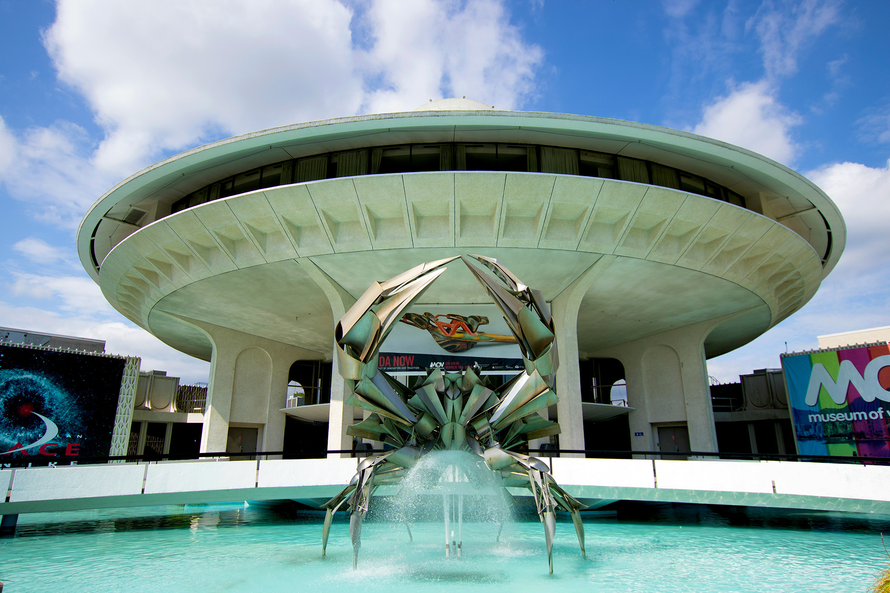
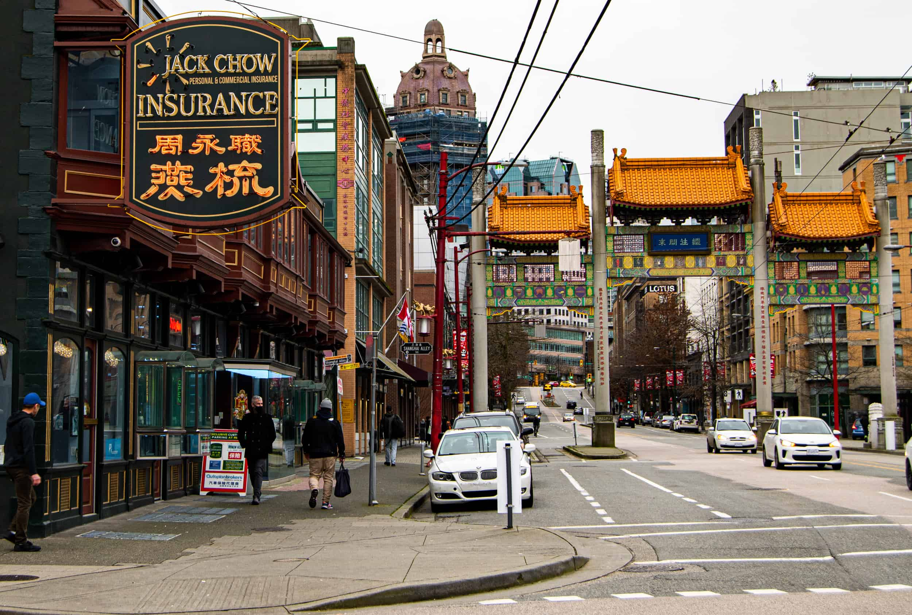
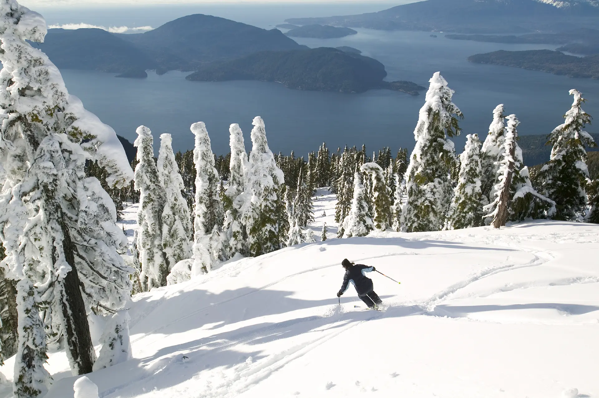
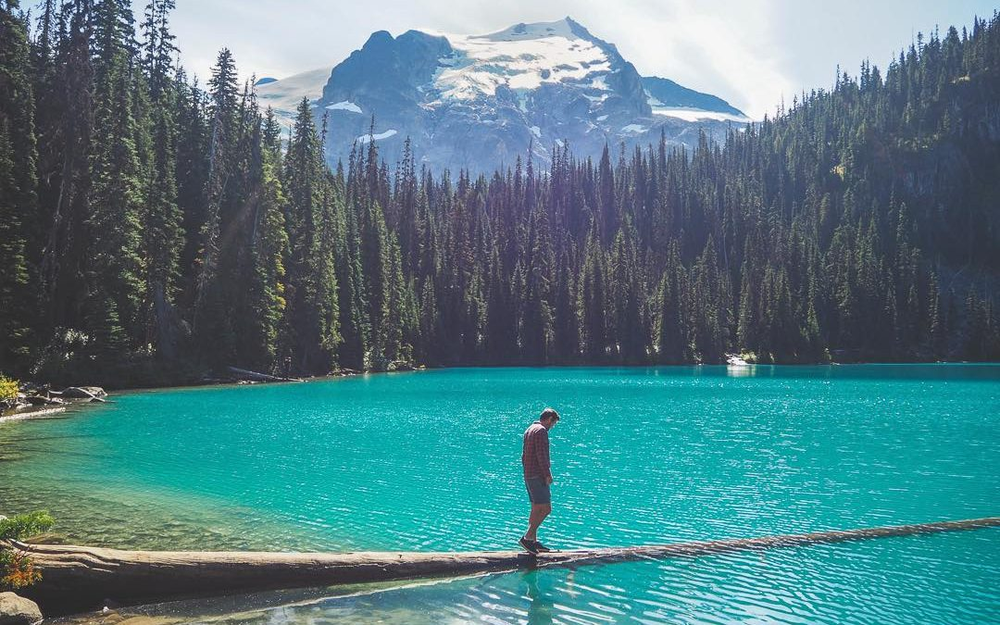
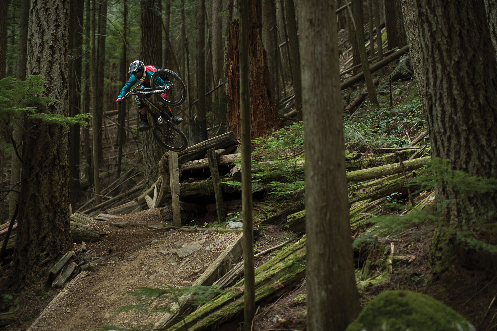
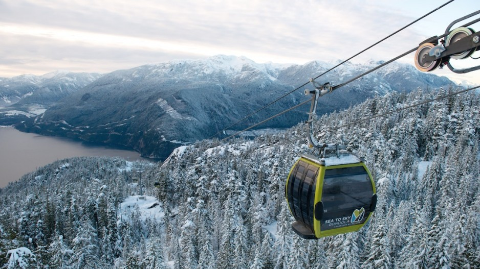

Robson Street

The most popular shopping street in Vancouver is Robson Street.
More about Robson street
Museums
There are many museums in Vancouver. You can visit Science World, Vancouver Art Gallery, Vancouver Maritime Museum – and many more.
More about Vancouver Maritime museum
Chinatown
Chinatown is a neighborhood in Vancouver and it's Canada's largest Chinatown. Read more here.
More about Chinatown
Skiing
Vancouver is a world-class destination for skiing. There are local mountains within 30 minutes of the city center; like Grouse Mountain and Cypress Mountain. Whistler Blackcomb is only a two-hour drive from Vancouver. Whistler is one of the largest and most famous ski resorts in North America.
More about Grouse Mountain
Hiking
There is a wide variety of trails in Vancouver. It’s a hiker's paradise. You can walk by the coast or hike in the mountains.
More about Vancouver Trails
Biking
Vancouver offers something for every biker. You can go mountain biking or you can explore the city by bike.
More about Mountain biking in Vancouver
Sea to Sky Gondola
In Squamish, a 45-minute drive from downtown Vancouver, there is The Sea to Sky Gondola. The 10-minute gondola ride will take you 885 meters up to a truly magical place with a fantastic view.
More about Sea To Sky Gondola